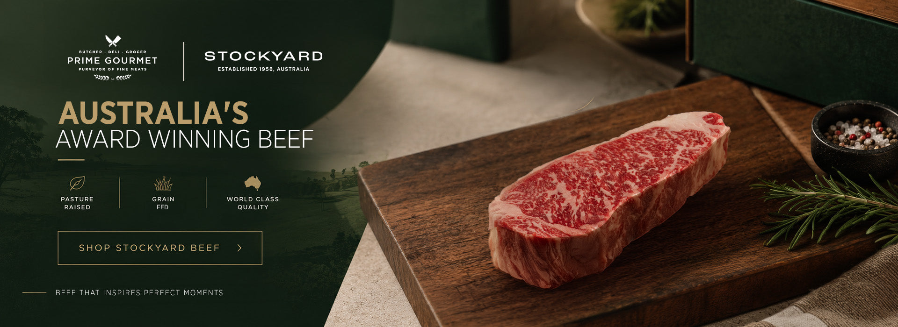

A modern gourmet food brand inspired by a timeless belief: exceptional ingredients create exceptional meals.

Classic Gourmet Fine Foods brings together premium meats, seafood, poultry, dairy, pantry essentials and prepared foods in one carefully curated range.
Our approach is simple: source thoughtfully, present beautifully and help customers choose products that make cooking easier and more enjoyable.
We focus on products that meet a high standard for flavour, freshness and consistency.
From premium cuts to pantry staples, our range is designed around complete meals.
We understand what chefs and home cooks need when selecting quality ingredients.
We aim to make every interaction clear, helpful and dependable.